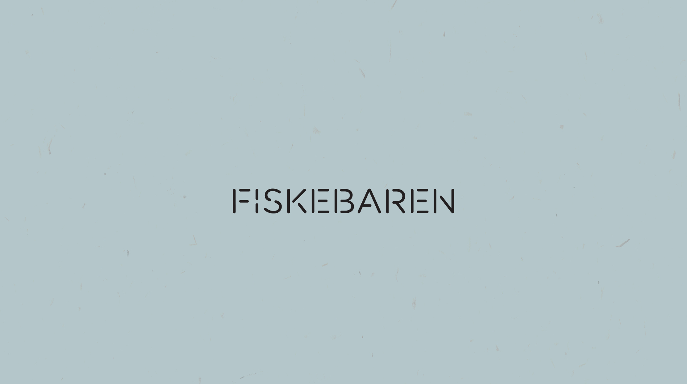
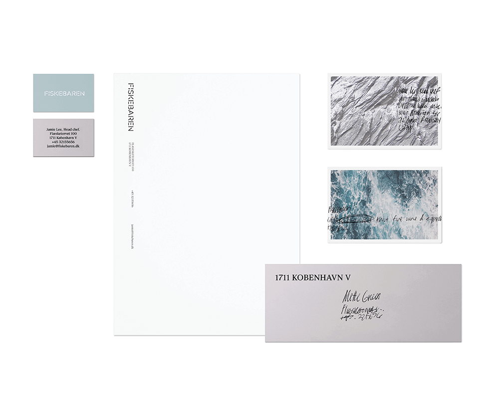
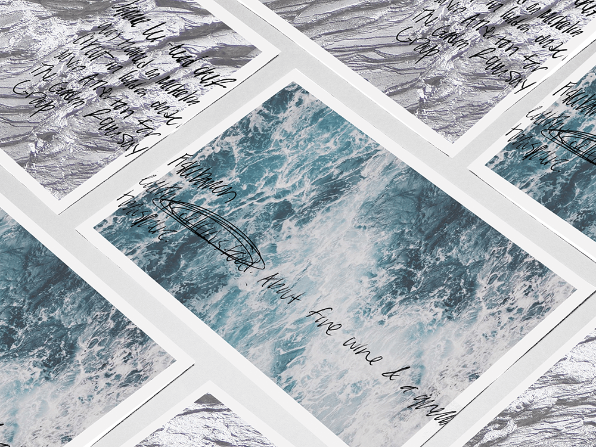
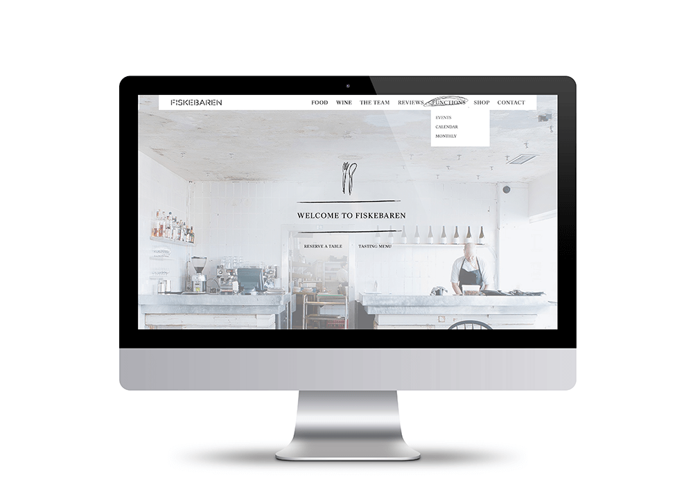
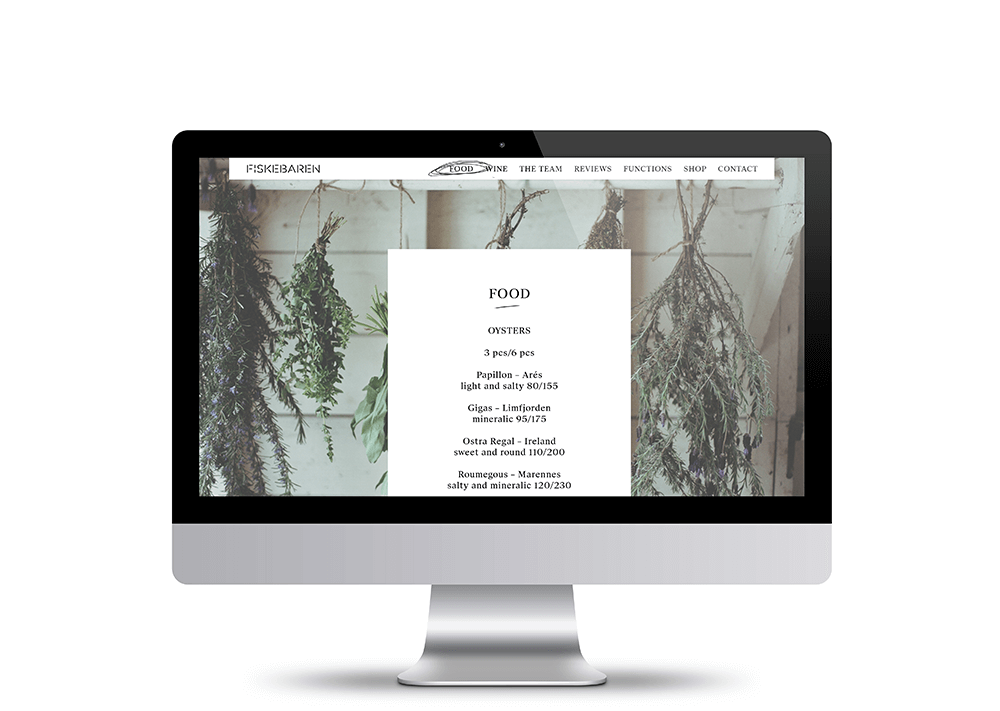

Fiskebaren
Type of Project: Branding
When: Fall 2015
Student Project
Fiskebaren is a fish bar located in Copenhagen, Denmark. This was a branding project I did at university. I decided to do this branding project because of my interest in New Nordic cuisine. I decided to make the workmark a stencil to reference old fishing crates. I used handwritten type throughout the brand to show their was a personal quality to what Fiskebaren does. I wanted it to feel contemporary and fresh.




